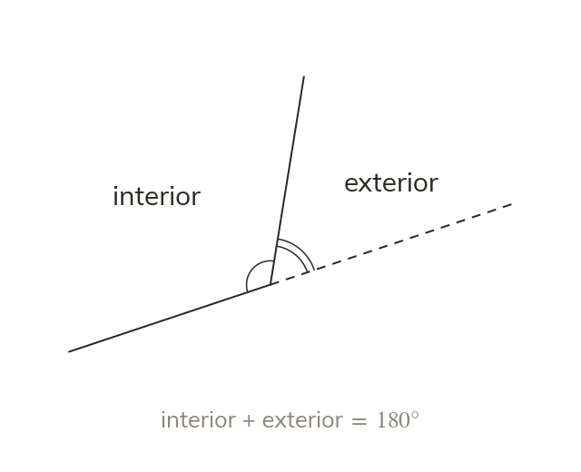

Interior and exterior make a straight line
Interior and exterior angles sit on a straight line, summing to So each interior angle is
At every vertex the interior and exterior angles lie on a straight line, so they sum to So a regular polygon's interior angle is minus